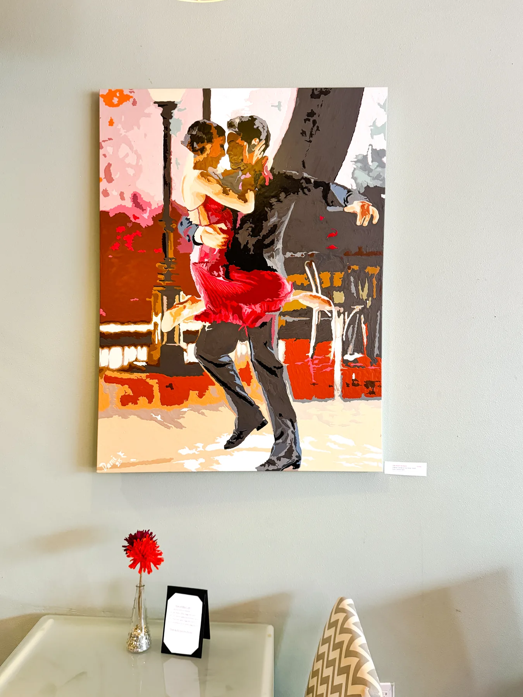
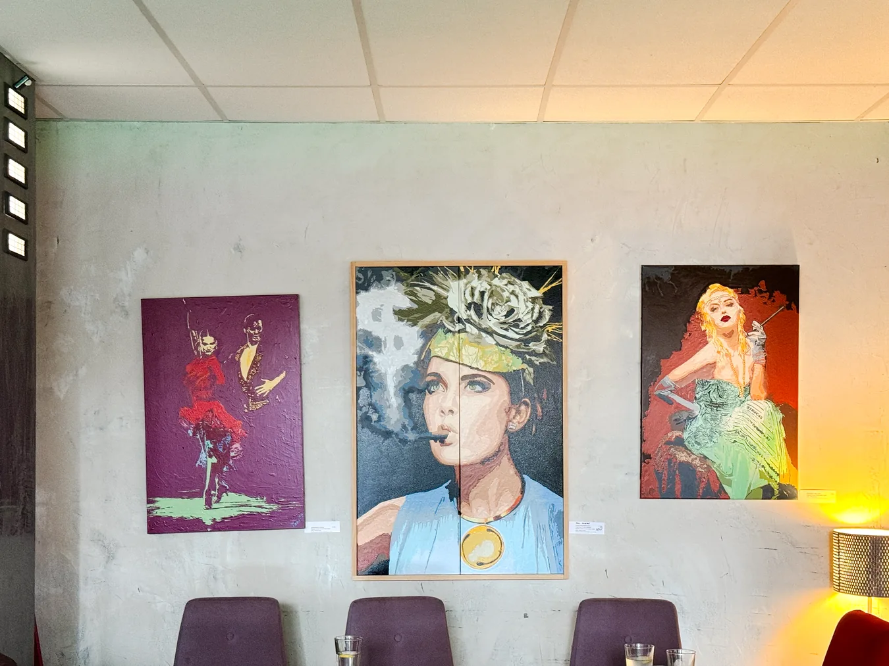
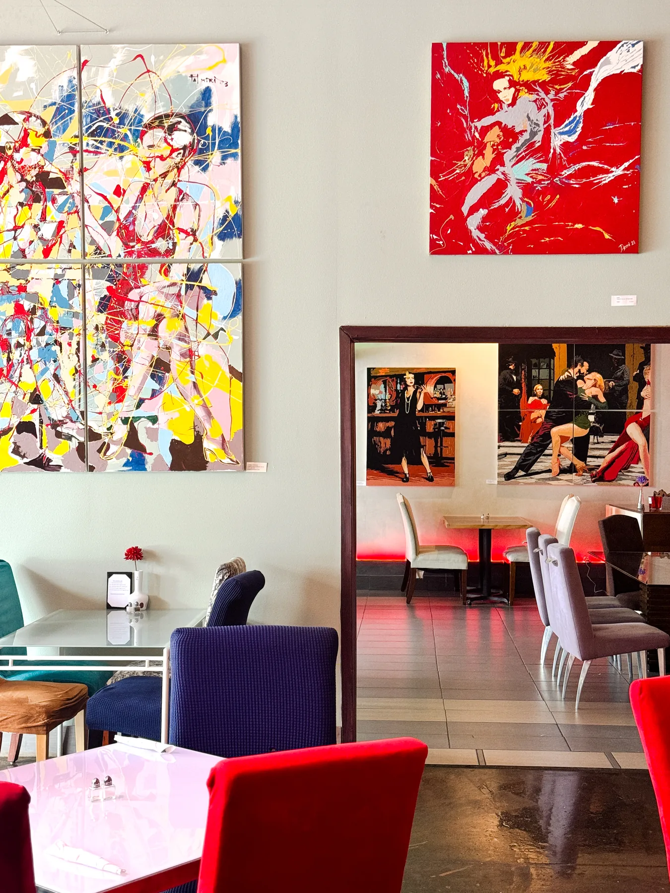
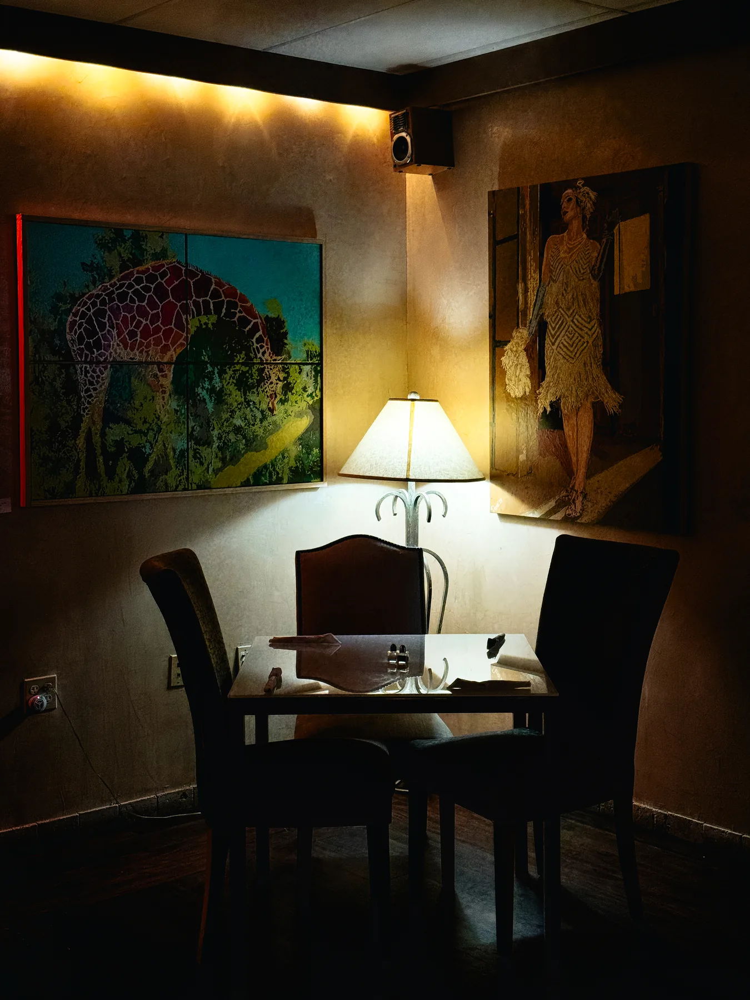

Art at Milano
The art of gathering.
Come for the Italian food. Look a little closer at the walls.

An artist-owned café
More than decoration.
The paintings at Milano are original works by the restaurant’s owner. Bold, expressive, and deeply personal, they give the dining room its one-of-a-kind character.
Most of the artwork comes from the owner’s own collection. Select pieces may be available to purchase, and the café occasionally features work by other artists.
A formal online catalog is coming later. In the meantime, the best way to discover the work is to experience it in person.
Ask about artwork
The gallery, in place
Art that lives here.


See something you love?
Take the conversation home.
If a work catches your eye during your visit, ask our team about its story and availability. You can also contact us ahead of time if you’re interested in a particular piece.
Inquire about art